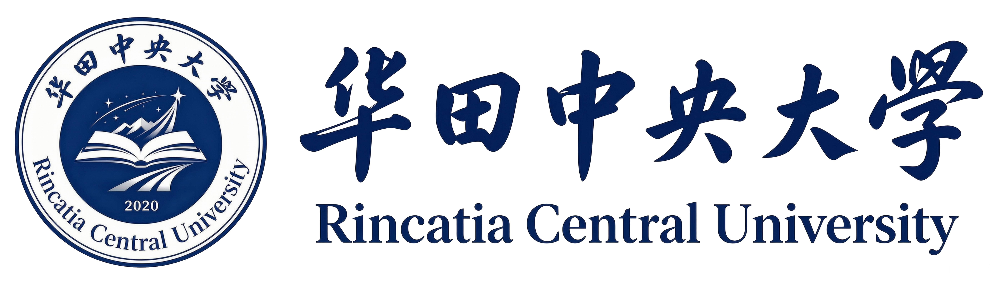

华田中央大学附属幼儿园

园所简介
华田中央大学附属幼儿园创办于2008年，是由华田中央大学思源教育学院直接创办和管理的公办性质幼儿园，也是思源教育学院学前教育专业的重要教学实践基地和科研实验基地。幼儿园坐落于华田中央大学校园内南区，环境优美、设施一流，占地面积15亩，建筑面积8000平方米。
幼儿园现有15个教学班，在园幼儿450余名，教职工68人，其中专任教师42人，全部为本科及以上学历，硕士研究生占比达40%。幼儿园2012年被评为华田市一级幼儿园，2015年获评省级示范幼儿园，连续多年被评为"华田市学前教育先进单位"。
办学理念：玩中学 · 学中乐
依托华田中央大学思源教育学院学前教育专业的深厚学术积淀，幼儿园秉持"玩中学、学中乐"的教育理念，以游戏为基本活动形式，尊重儿童天性，关注个体差异，促进每位幼儿在健康、语言、社会、科学、艺术五大领域全面和谐发展。
办学特色
高校直属办学优势
作为大学直属幼儿园，享有得天独厚的教育资源优势。思源教育学院学前教育系的专家教授直接参与幼儿园的课程设计与教学指导，幼儿园教师同时承担着学前教育专业学生的见习指导任务，教学与研究深度融合。幼儿园还定期接待国内外学前教育专家来访交流，教育理念始终走在行业前沿。
探究式游戏课程
幼儿园构建了独具特色的"探究式游戏课程体系"，打破传统分科教学模式，以主题探究为引领，让幼儿在自主游戏中发现问题、解决问题、建构知识。课程涵盖自然探究、艺术表达、社会体验、科学发现等多个维度，充分激发幼儿的好奇心和探索精神。
大学资源深度共享
幼儿园小朋友可以"近水楼台先得月"，走进大学校园，参观图书馆、博物馆、实验室，与大学生哥哥姐姐互动交流。学校体育场馆、艺术中心等设施也向幼儿园开放，为孩子们提供了远超普通幼儿园的广阔成长空间。每年举办的"小小华田人"主题活动，更是让孩子们深度体验大学校园文化。
教职工子女优先入园
作为华田中央大学直属幼儿园，主要服务对象为大学教职工子女，切实解决了广大教师的后顾之忧。同时，幼儿园也面向社会开放部分学位，充分发挥高校优质学前教育资源的辐射带动作用。